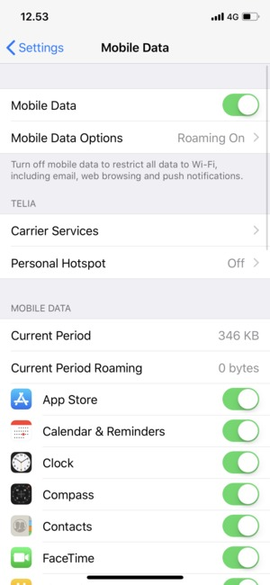

Шаг 1
Открыть приложение «Настройки»
«Настройки» > «Сотовые данные» > «Параметры данных» > «Сотовая сеть»
Шаг 2
Открыть «Сотовые данные»
«Настройки» > «Сотовые данные» > «Параметры данных» > «Сотовая сеть»

Шаг 3
Открыть «Сотовая сетй передачи данных»
«Настройки» > «Сотовые данные» > «Параметры данных» > «Сотовая сеть»